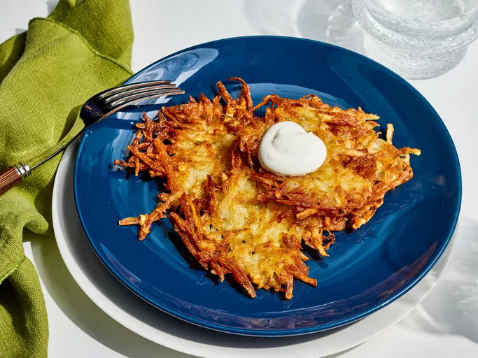

German Potato Pancakes
These German potato pancakes are a nice change from regular pancakes. They make a great dinner meal when served with Bratwurst sausage. I spread mine with cranberry sauce and top with maple syrup

Prep Time: 20 mins
Cook Time: 25 mins
Total Time: 45 mins
Servings: 6
Ingredients
- 2 large eggs
- 2 tablespoons all-purpose flour
- ¼ teaspoon baking powder
- ½ teaspoon salt
- ¼ teaspoon pepper
- 6 medium potatoes, peeled and shredded
- ½ cup finely chopped onion
- ¼ cup vegetable oil
Directions
- Gather all ingredients.
- Beat eggs, flour, baking powder, salt, and pepper together in a large bowl; stir in potatoes and onion.
- Heat oil in a large skillet over medium heat. Drop heaping tablespoonfuls of potato mixture into hot oil in batches. Press to flatten.
- Cook until browned and crisp, about 3 minutes on each side.
- Transfer to a paper towel-lined plate to drain.
- Repeat with remaining potato mixture. Enjoy!
Nutrition Facts
Per serving: 283 calories
Total Fat 11g Saturated Fat 2g Cholesterol 62mg Sodium 246mg Total Carbohydrate 41g Dietary Fiber 5g Total Sugars 2g Protein 7g Vitamin C 43mg Calcium 47mg Iron 2mg Potassium 943mg